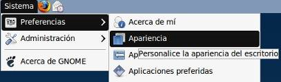
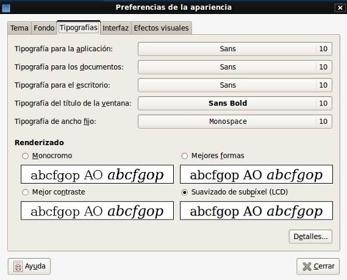
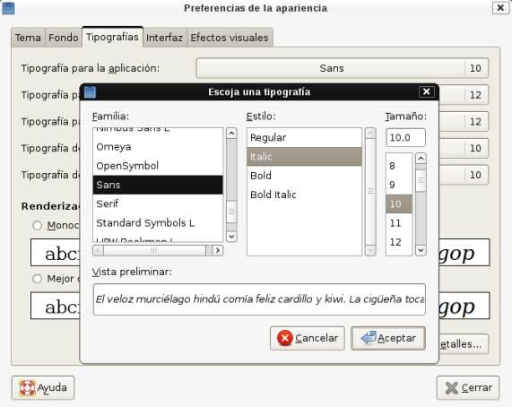

Puede que el tipo de letra que usa el sistema por defecto en los programas, el escritorio, los documentos, etc… no sea de tu agrado o simplemente necesites cambiarla, pues si te decides a modificar el tipo de letra de algún elemento de tu ordenador sólo tienes que hacer clic en el panel superior del escritorio en el menú Sistema→Preferencias→Apariencia→Tipografía.

Si observas la ventana que se te abre te permite modificar el tipo de letra en:

Aplicación: Modifica el tipo de letra de todos los programas, pero no se refiere al tipo de letra del texto que escribas dentro de determinados programas, sino al tipo de letra de las pestañas de los menús, de las ventanas, etc… de todo lo que engloba el entorno de trabajo del programa.
Documentos: esta opción, en realidad, afecta a pocos programas de tu sistema.
Escritorio: Cambia el tipo de letra de todos los elementos o iconos que tengas en tu escritorio, pero no modifica el tipo de letra de los paneles.
Título de la ventana: puedes cambiar el tipo de letra de la barra de título de todas las ventanas que se te abran, tanto ventanas de programas, informativas, de mensajes de error, de elección de opciones, etc…
Ancho fijo: a veces creas un archivo de texto que después abres en otro sistema operativo, y con frecuencia, este otro sistema modifica o varía el tipo de letra que tu habías utilizado en un principio, si no quieres que te pase esto, con la letra de ancho fijo podrás evitarlo.
Si haces clic en cualquiera de los recuadros comprobarás que puedes cambiar el tipo de letra, el estilo y hasta el tamaño.

Anterior: Salvapantallas
Siguiente: Apariencia de las ventanas
{kind=link}
{kind=link}
{kind=link}